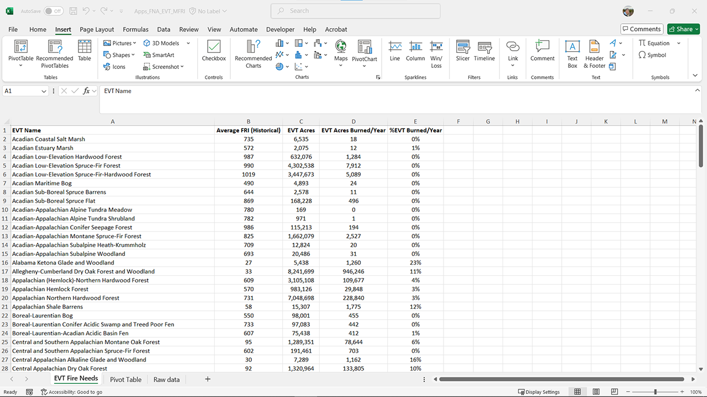

FNA Process: Summary Table
Creating a Summary Table in Microsoft Excel
Once you have summarized EVT Acres, EVT acres burned per year, and the weighted average FRI for each EVT using a pivot table, you can create a new table in a new worksheet tab to organize this data. This will help you clearly see, for each EVT name, the average historical FRI, the total acres of each EVT on the landscape, and the acres of that EVT burned each year.
Step-by-Step Process
Screenshots of the process are included below the written instructions for those who find them useful.
Summarize Data in Pivot Table
- Ensure your pivot table summarizes the following:
EVT Acres: Total acres for each EVT.
EVT Acres Burned per Year: Total acres burned annually for each EVT.
Average FRI: Average historical fire return interval for each EVT.
- Ensure your pivot table summarizes the following:
Copy Pivot Table Data
Select the entire pivot table.
Right-click and choose “Copy” or press
Ctrl+C.
Create a New Worksheet Tab
- Click the “+” icon at the bottom of the Excel window to create a new worksheet tab.
Paste Pivot Table Data
In the new worksheet tab, right-click in the first cell (A1) and choose “Paste Special”.
Select “Values” from the Paste Special options and click “OK”. This ensures you are pasting only the values, not the pivot table formatting.
Clean Up Table Headers
- Review the pasted data and update the table headers to something more meaningful. For example:
EVT Name
Average Historical FRI
Total EVT Acres
EVT Acres Burned per Year
- Review the pasted data and update the table headers to something more meaningful. For example:
Format the Table
Adjust column widths and apply any necessary formatting to improve readability.
You can also add filters to the headers to make it easier to sort and analyze the data.
Screenshot for creating the summary table

This process will help you create a clear and organized summary table, making it easier to understand and present your fire needs assessment results.
Bonus action: You can also calculate what percent of each EVT should burn per year, by adding a column and then using a formula to divide EVT acres burned per year by total EVT acres.
Saving the worksheet back to a .csv file
Once you have created your summary table, you will likely want to save it back to a CSV file to ensure compatibility with various programs, including ArcGIS Pro.
CSV files have very particular formatting needs. You will not be able to save the pivot table to the .csv format, only the content in the summary table worksheet. There is no way to save just one worksheet, so you will first need to copy the summary table to a new Excel workbook and save the .csv file from there.
Step-by-step process
Click on File in the Excel ribbon.
Select Save As.
Choose the location to save the file.
In the Save As type dropdown menu, select CSV (comma delimited) (*.csv).
Enter a meaningful name for the file and click Save.
Still have questions? LANDFIRE is here to help.
Ask the LANDFIRE Helpdesk (email link).
Search and subscribe to the LANDFIRE YouTube Channel (see tutorials, Office Hours, quick demonstrations).
Join an Office Hour (monthly meeting with open format Q & A with LANDFIRE experts).
Schedule a meeting (email link) with TNC’s LANDFIRE Team.